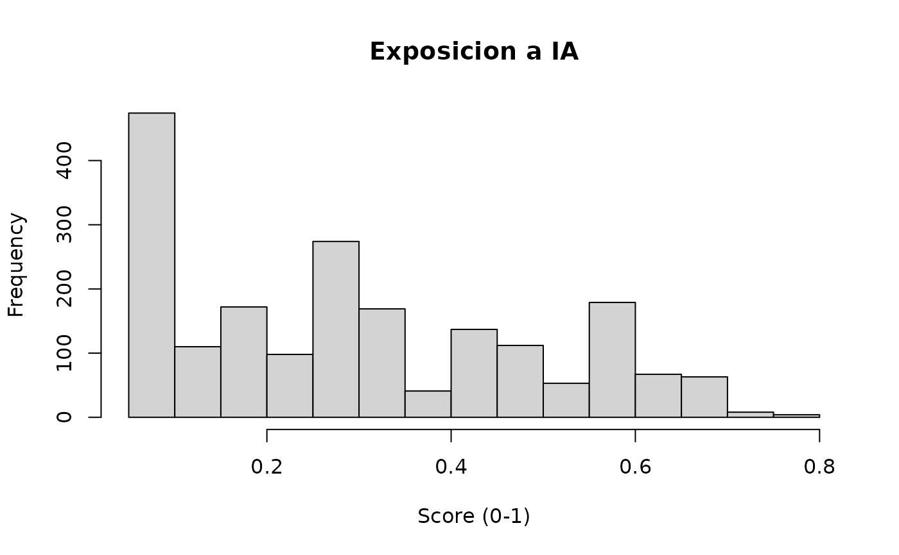

Cruzar ocupaciones con el indice de exposicion a inteligencia artificial
Source:R/ia_exposicion.R
ia_exposicion.RdAgrega a los microdatos el indice de exposicion a IA generativa por ocupacion, construido con Claude Sonnet 4.6 (Anthropic). El indice mide el grado en que las tareas de cada ocupacion pueden ser asistidas o sustituidas por IA generativa, usando un score continuo de 0 a 1.
Arguments
- data
data.framecon microdatos de EPEN/EPE que incluya codigos CNO (resultado de aplicarcno()).- var_cno
Nombre de la variable con el codigo CNO 2015 en
data. Por defecto"cno_cod"(generada porcno()).- score
Que score agregar. Opciones:
"mean"(por defecto): score medio de exposicion por ocupacion."median": score mediano."ambos": agrega tanto media como mediana.
- incluir_tipo
Logico. Si
TRUE, agrega tambien el tipo de impacto predominante (A,S,N) por ocupacion. Por defectoFALSE.
Value
El mismo data.frame con columnas adicionales:
- ia_score_mean
Score medio de exposicion a IA (0-1).
- ia_score_median
Score mediano (solo si
score = "ambos").- ia_tipo
Tipo de impacto predominante (solo si
incluir_tipo = TRUE).
Details
El indice fue construido evaluando las tareas de cada ocupacion del Clasificador Nacional de Ocupaciones (CNO 2015) con tres corridas independientes del modelo Claude Sonnet 4.6, consolidando el resultado por consenso. Cada tarea recibe:
Un score continuo (0-1) de exposicion.
Un tipo de impacto:
A(aumento/augmentation),S(sustitucion),N(impacto nulo).
El indice final por ocupacion es la media de los scores de sus tareas. Correlacion con el indice de la OIT: r = 0.85.
Examples
# Con la muestra incluida
muestra <- cno(muestra_epen_2024)
#> ℹ Ano detectado: 2024
#> ℹ Clasificador: CNO_2015
muestra <- ia_exposicion(muestra)
#> Warning: ! 39 filas (2%) tienen codigo CNO sin score de IA.
#> ℹ Puede deberse a codigos sin cobertura en el indice (22 codigos en 2024).
# Ver distribucion de exposicion
hist(muestra$ia_score_mean, main = "Exposicion a IA", xlab = "Score (0-1)")

if (FALSE) { # \dontrun{
epen_2024 <- descargar(year = 2024) |>
cno() |>
ia_exposicion(score = "ambos", incluir_tipo = TRUE)
# Exposicion media por departamento (con diseno muestral)
indicadores(epen_2024, "ingreso_promedio", por = "departamento")
} # }